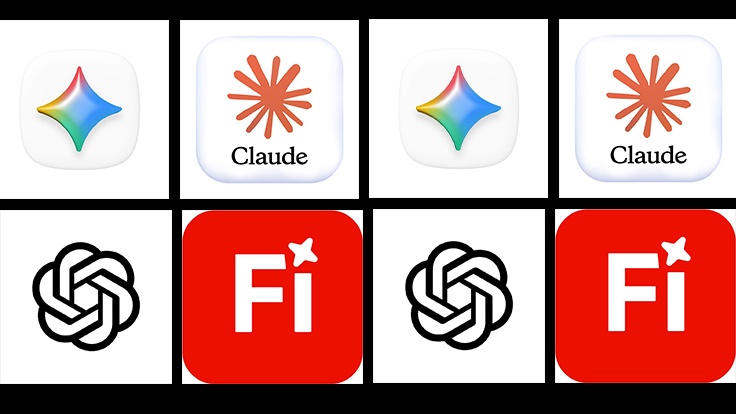

Introduction
L'intelligence artificielle révolutionne aujourd'hui de nombreux secteurs, et le design graphique n'échappe pas à cette transformation.
Des outils comme ChatGPT, Adobe Firefly, Gemini ou Midjourney permettent désormais de générer des idées, créer des visuels et accélérer considérablement les processus de création.
Mais l'intelligence artificielle représente-t-elle une menace pour les designers ou une opportunité d'améliorer leur travail ?
L'arrivée d'une nouvelle révolution créative
Depuis plusieurs années, les logiciels de design évoluent rapidement. Cependant, l'apparition de l'intelligence artificielle marque une véritable rupture dans les méthodes de travail. Aujourd'hui, un designer peut générer des concepts, produire des textes, rechercher des palettes de couleurs ou créer des illustrations en quelques secondes.
L'intelligence artificielle ne remplace pas la créativité humaine. Elle amplifie les capacités du créateur.
Les outils IA les plus utilisés par les designers
Plusieurs solutions sont devenues incontournables dans le secteur créatif :
- ChatGPT pour la rédaction et les idées créatives
- Adobe Firefly pour la génération d'images
- Gemini pour la recherche et l'assistance
- Midjourney pour les concepts visuels
- Canva AI pour les créations rapides

Les avantages de l'intelligence artificielle
Les professionnels gagnent aujourd'hui un temps considérable grâce à l'automatisation de certaines tâches.
- Recherche d'idées plus rapide
- Création de maquettes en quelques minutes
- Production de contenu accélérée
- Analyse des tendances du marché
- Gain de productivité
Les limites de l'intelligence artificielle
Malgré ses performances impressionnantes, l'intelligence artificielle possède certaines limites. Elle ne comprend pas réellement les émotions humaines, la culture d'une marque ou les besoins profonds d'un client. Les meilleurs résultats sont obtenus lorsque l'intelligence artificielle travaille en collaboration avec un designer expérimenté.
Pourquoi les designers resteront indispensables
Créer une identité visuelle ne consiste pas uniquement à produire une image. Le designer analyse le marché, comprend le client, construit une stratégie et développe une expérience visuelle cohérente. Cette dimension humaine reste aujourd'hui irremplaçable.
Un exemple dans le monde réel
Une intelligence artificielle peut générer cent propositions de logos en quelques secondes. Cependant, elle ne peut pas comprendre les ambitions, les valeurs et l'histoire unique d'une entreprise comme le ferait un designer professionnel. C'est pourquoi les grandes marques continuent d'investir dans des équipes créatives humaines.
L'avenir du design graphique
Dans les prochaines années, l'intelligence artificielle deviendra un assistant incontournable pour les créatifs. Les designers qui sauront utiliser ces nouvelles technologies tout en conservant leur vision artistique auront un avantage considérable sur le marché. L'avenir n'oppose pas l'intelligence artificielle aux designers : il repose sur leur collaboration.
Conclusion
L'intelligence artificielle transforme profondément le secteur du design graphique. Elle permet aux créateurs de travailler plus rapidement, d'explorer davantage d'idées et d'améliorer leur productivité. Cependant, la créativité, la stratégie et la compréhension humaine restent au cœur du métier de designer.
Chez Afro Vecteur, nous utilisons l'intelligence artificielle comme un outil puissant au service de la créativité humaine afin de produire des identités visuelles modernes, efficaces et innovantes.